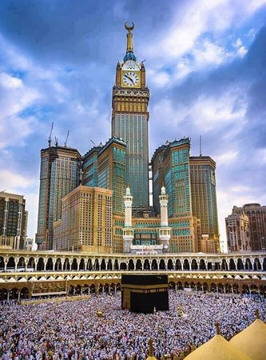

الحج هو الركن الخامس من أركان الإسلام، وهو فرض على كل مسلم بالغ قادر مرة واحدة في العمر. يتم الحج إلى بيت الله الحرام في مكة المكرمة في وقت محدد من كل عام، في شهر ذي الحجة.
مناسك الحجتتضمن مناسك الحج عدة أعمال منها:
قال النبي ﷺ:
"من حج فلم يرفث ولم يفسق رجع كيوم ولدته أمه." (رواه البخاري ومسلم)
الحج هو الركن الخامس بعد الشهادتين، الصلاة، الزكاة، والصوم. وهو دليل على وحدة المسلمين وتساويهم أمام الله، حيث يلبسون لباس الإحرام الأبيض مهما كانت جنسياتهم أو لغاتهم.
من شروط الحج: الإسلام، البلوغ، العقل، القدرة المالية والبدنية.
الحج عبادة عظيمة تقرب المسلم من ربه، وتمنحه فرصة للتوبة والتطهير من الذنوب.
للمزيد من المعلومات، يمكنك زيارة:
ويكيبيديا - الحج